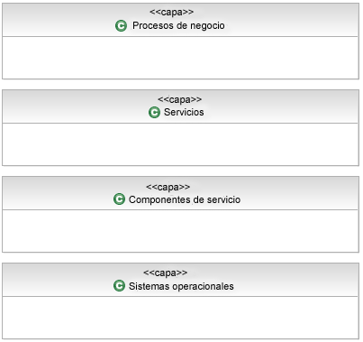
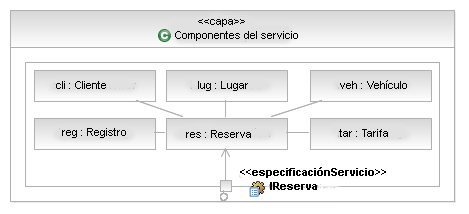

|
Interfaces de componentes de modelo
Los componentes, y en particular los componentes de servicio, deberían no proporcionar operaciones directamente; en su
lugar, deberían utilizar infraestructuras para describir un conjunto de operaciones y, a continuación,
proporcionar/ejecutar la interfaz. Esto se describe a grandes rasgos en el RUP, véase la Tarea: Diseño de subsistema (SOA) y la Tarea: Identificar elementos de diseño.
Ejemplo
En nuestro ejemplo Alquiler de coche hemos identificado (a través del análisis del subsistema) la necesidad de un
componente de servicio de reserva. Para garantizar un diseño reutilizable y flexible podemos también crear una interfaz
de reserva correspondiente, o utilizar la Especificación de servicio (de Tarea: Especificación de servicio) para describir la interfaz en
nuestro componente de servicio. El componente ejecutará (en términos de UML) cada interfaz suministrada y podrá también
indicar su dependencia en otras interfaces de componente utilizando una relación de uso de UML, tal como se muestra en
el siguiente diagrama.

Tenga en cuenta que hemos elidido los detalles de las propias interfaces para mayor claridad.
|
Atributos de componentes de modelo
En este paso, definiremos los detalles de cada componente de servicio, lo que incluye atributos, servicios, políticas y
reglas. La plantilla que sirve para documentar la especificación de componente de servicio incluirá los siguientes
atributos:
-
Propiedades o atributos
-
Reglas
-
Variaciones
-
Depende de <otros componentes>
-
Composición de componentes funcionales y técnicos
-
Servicios suministrados
-
Servicios necesarios
|
Sucesos y mensajes de componentes de modelo
| Durante esta actividad, identificamos los sucesos que el componente debe detectar y a los que debe responder cuando se
desencadenan. Los mensajes de componente entrantes y salientes también se especifican. En el caso de los servicios
dirigidos por cambios en los datos, se debe tomar una vista centrada en los datos y los procesos empresariales no incluidos
en el ámbito de la solución basada en servicios deben identificarse y valorarse para la generación de sucesos y el
suministro de datos a los servicios del cliente en la solución orientada a servicios. Por ejemplo, un nuevo cliente puede
ser añadido por varios procesos empresariales dentro de un paquete ISV. En todos los casos, los mismos datos pueden no
capturarse para el cliente, dependiendo del contexto específico del proceso empresarial. Los servicios de cliente que
necesiten conocer los nuevos clientes a través de un servicio de proveedor deberán poder controlar la invocación del nuevo
servicio de cliente independientemente del proceso empresarial que lo genere. |
Estructura interna de componentes de modelo
Durante esta actividad, es importante crear al menos un diagrama de clase que muestre las relaciones
entre los componentes técnicos y funcionales de cada componente de servicio. El modelado de UML estándar se aplica en
esta etapa. Se recomienda el uso de patrones para estructurar el gráfico de objetos resultante de forma que sea
extensible y esté abierto a cambios. Si se anticipa un grado mayor de cambios, es recomendable realizar un análisis de variabilidad en esta etapa.
Tal como describimos en la tarea anterior, cuando se diseñan cambios, o se anticipa un impacto importante en el diseño
y la estructura del sistema de TI como consecuencia de cambios empresariales futuros, entonces sería inteligente
emplear las técnicas de Análisis de variabilidad. Estas técnicas refactorizan los factores comunes y
externalizan las variaciones mediante patrones de diseño. Los factores en común y las variaciones descubiertas
previamente pueden utilizarse como punto de partida y pueden aumentar con el uso de patrones de diseño comunes como
Estrategia, Estado [i], Objeto de regla [ii], Objeto de tipo, etc.
El análisis realizado durante el diseño detallado identifica factores comunes, se centra en la creación de variaciones
conectables y entraña seis principios que ayudan a separar los aspectos más cambiantes de los menos de los sistemas de
software, aislando y encapsulando los cambios:
-
Separar y modelar los aspectos cambiantes de los no cambiantes del dominio: identificar, separar, encapsular y
externalizar variaciones en aumento.
-
Crear jerarquías de tipos para cada punto de variación.
-
Asignar tipos de regla a cada tipo de variación.
-
Implementar tres niveles de abstracción; utilizar metapatrón de herencia agregado
-
Empezar a partir de niveles de reutilización superiores a los objetos y crear activos en cada nivel de
reutilización; crear infraestructuras pequeñas alrededor de los puntos de variación. En general, cada
infraestructura no debería tener más de 7+-2 clases.
-
Cada elemento de reutilización tiene sus propios comportamientos. Externalizar el comportamiento como datos
configurables que se puedan leer en la aplicación para permitir un cableado ligero.
[i] Erich
Gamma, Richard
Helm, Ralph
Johnson, John
Vlissides, Design Patterns, Addision-Wesley 1994.
[ii] Arsanjani, A., Rule Object: A Pattern Language for Flexible Modeling and Construction of Business Rules,
Washington University Technical Report number: wucs-00-29, Proceedings of the Pattern Languages of Program
Design, 2000.
|
Flujo de componentes de modelo
Durante esta actividad, identificamos el flujo interno dentro del componente de servicio. Esto se puede representar
como diagrama de actividades o secuencias.
Consideración de ISV: El flujo interno de componentes dentro de un componente de paquete ISV puede o no
exponerse y/o configurarse dependiendo del paquete. Si los objetos del componente de ISV se exponen y configuran, su
flujo podrá adaptarse y personalizarse para que se ajuste mejor a la solución. Sin embargo, uno debería ser consciente
de los problemas de mantenimiento potenciales asociados con ello. En muchos casos, no será posible, ni siquiera
necesario, identificar el flujo interno de componentes de un paquete ISV. En este caso, el componente ISV debería ser
tenido en cuenta como "caja negra", con sólo servicios documentados expuestos y ejecutados.
|
Asignar componentes a capas
Las capas ofrecen los siguientes beneficios:
-
Las capas ayudan a aportar atributos de modificabilidad y portabilidad de calidad a un sistema de TI. Un cambio en
una capa inferior que no afecte a su interfaz no necesitará cambios en una capa superior. Por ejemplo, cualquier
servidor de aplicación compatible con J2EE™ que cumpla el estándar J2EE™ puede sustituirse libremente sin necesidad
de cambiar a software de nivel de aplicación. Un cambio en una capa superior que no afecte a las facilidades que
requiere de capas inferiores no afecta a ninguna capa inferior. En general, los cambios en un sistema de software
con capas que no afecten a ninguna interfaz se confinan en una sola capa.
-
Las capas forman parte del patrón que la arquitectura desempeña en la construcción del sistema. Conocer las capas
en las que reside su software, los desarrolladores saben en qué servicios pueden confiar en el entorno de
codificación. Las capas pueden definir asignaciones de trabajo para equipos de desarrollo (aunque no siempre).
-
Las capas forman parte del rol de comunicación desempeñado por la arquitectura. En un sistema grande, el número de
dependencias entre módulos se amplía rápidamente. La organización del software en capas con interfaces es una
herramienta importante para gestionar la complejidad y comunicar la estructura a los desarrolladores.
-
Las capas ayudan con el rol de análisis desempeñado por la arquitectura. Se pueden utilizar para analizar el
impacto de los cambios en el diseño.
Las capas pueden ser estrictas o no estrictas. Un esquema estricto de capas significa que los componentes sólo pueden
utilizar componentes en la misma capa o en capas inmediatamente por debajo de ellas. Un esquema de capas no estricto
significa que los componentes pueden utilizar componentes en la misma capa o en cualquier capa inferior.
Observemos que como regla general, no obstante, los componentes deberían poder utilizar componentes en capas
superiores. Si los componentes tienen dependencias en componentes de capas superiores, entonces se volverá difícil
sustituir los componentes de capas superiores sin tener que cambiar los componentes de capas inferiores. Para obtener
más información, incluidas las técnicas de modelado de capas, consulte Concepto: Particionamiento de soluciones.
Un punto importante que debe tenerse en cuenta es que las capas de software no son iguales a los niveles. La asignación
a máquinas en un entorno distribuido, el flujo de datos entre elementos, y la presencia y utilización de canales de
comunicación tienden todos a expresarse en imágenes de nivel que pueden ser indiscernibles de los diagramas de capas.
Los diagramas de nivel tienden a mostrar flechas de dos direcciones que indican una comunicación bidireccional de algún
tipo. La comunicación bidireccional (simétrica) no es una buena noticia en un diagrama de capas. Además, la asignación
de un componente a un nivel se basa en las reglas de colocación que se tienen en cuenta al definir la arquitectura
operativa y es definida por las características de nivel de servicio necesarias del sistema. La diferencia principal
entre los diagramas de capas y las imágenes de niveles es que las primeras no tienen noción de colocación mientras las
segundas sí lo tienen claro.
Reglas de miniatura para capas
-
Todos los componentes que proporcionan funcionalidad empresarial independiente de aplicación podrían ir en una
capa. Las funciones empresariales independientes de aplicación son tipo "gestión de clientes" y "gestión de
productos" y se aplican a aun rango de distintas aplicaciones.
-
Todos los componentes que ofrecen funciones técnicas, caso del manejo de errores, la autenticación, el registro y
la auditoría podrían ir en otra capa (lógica). Estos componentes son independientes de la empresa y de la
aplicación. En algunos casos, la proximidad a componentes funcionales puede requerir que se coloquen en una capa
común. Se trata de decisiones arquitectónicas y deben documentarse como tales.
-
Los componentes de middleware como la cola de mensajes y el software DBMS relacional podrían ir en una capa más.
Esto también se denomina "Tejido".
Ejemplo
A continuación se muestra una vista a capas de una SOA que muestra capas típicas (y verdaderamente recomendadas) de los
distintos elementos presentes en una solución.

Ahora, en este esquema de capas, es relativamente simple ejecutar allí donde nuestros componentes residan, colocamos
los componentes relevantes para nuestro ejemplo Alquiler de un coche en la capa Componentes de servicio, tal como se
muestra a continuación. Observe que deseamos emplear capas estrictas en nuestro modelo y, por tanto, utilizamos la
composición UML para contener nuestros componentes en la capa Componente de servicio y sólo exponer la funcionalidad de
Componentes de servicio usando puertos delegados allí donde el puerto proporciona la misma interfaz que el propio
componente de servicio.

|
|